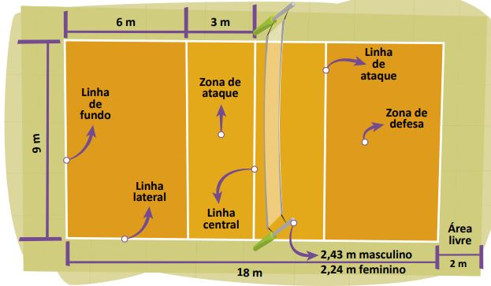

As principais regras do vôlei são:
Cada equipe possui um técnico;
Uma partida é constituída de 5 sets;
Não existe tempo pré-determinado para cada set;
Cada set tem um máximo de 25 pontos com uma diferença mínima de 2 pontos;
Em caso de empate no set no final (24 x 24), a partida continua até que a diferença de dois pontos seja atingida (26 x 24, 27 x 25, etc.);
Após o saque, a equipe só pode tocar três vezes na bola;
Ganha a equipe que vencer três sets;
Se houver empate nos sets (2x2) o 5º set será decisivo.
O vôlei de quadra é formado por duas equipes com 6 jogadores em cada. No total, são 12 jogadores. Existem ainda 6 jogadores reserva.
Além do vôlei de quadra, há também o vôlei de praia. Diferente da quadra, o de praia é jogado na areia e contém somente quatro jogadores, sendo dois de cada equipe.
Cada jogador tem uma posição dentro da quadra, a qual apresenta uma ordem de rotação:
3 jogadores posicionam-se perto da rede;
3 jogadores posicionam-se na linha de trás.
As regras do voleibol incluem diversas faltas no saque, ataque, passe de bola, toques, posição, rotação de jogadores, dentre outros. Alguns exemplos de falta são: